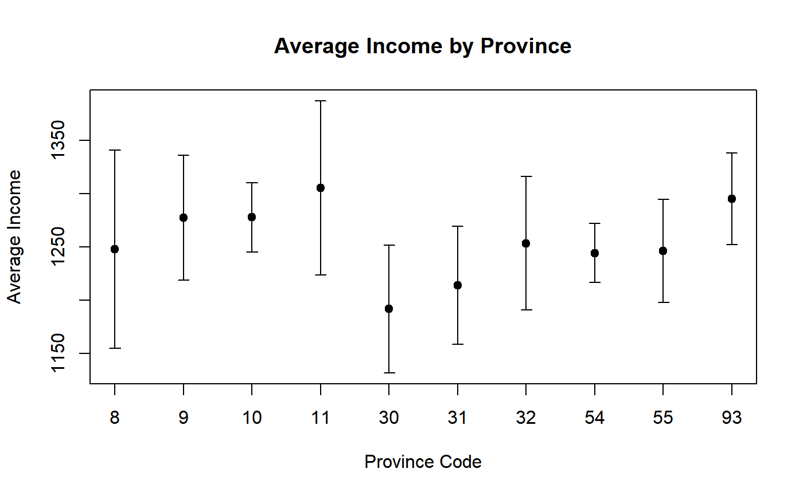
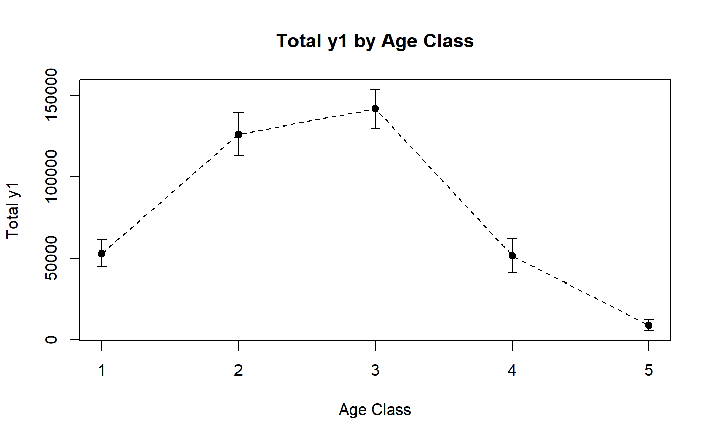
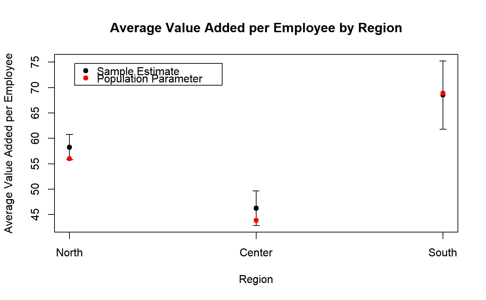
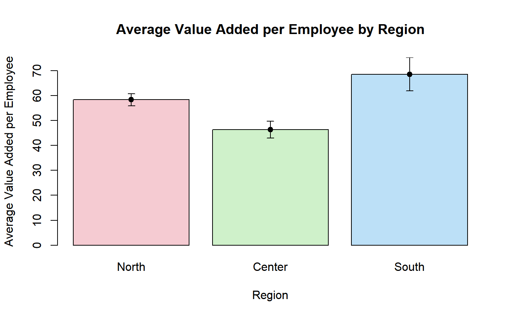
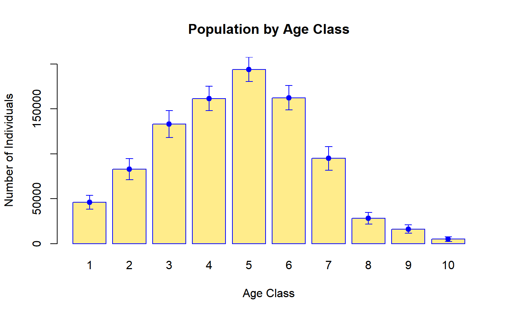

PlotEstCI.RdThese functions plot point estimates and confidence intervals by domains (subpopulations).
PlotCI(stat, level = 0.95, eb.len = 0.05, eb.col = "black", eb.lwd = 1, xlab = "Domain", ylab = "Estimate", labels = NULL, ...) BarPlotCI(stat, level = 0.95, eb.len = 0.05, eb.col = "black", eb.lwd = 1, xlab = "Domain", ylab = "Estimate", names.arg = NULL, pch = "", ...)
| stat | An object containing survey statistics. |
|---|---|
| level | Confidence level for the confidence intervals to be plotted as error bars: the default value is |
| eb.len | Half length of the error bars cap (in inches). Defaults to |
| eb.col | Color of the error bars. Defaults to |
| eb.lwd | Line width of the error bars. Defaults to |
| xlab | A label for the x axis. Defaults to |
| ylab | A label for the y axis. Defaults to |
| labels | Labels to be placed at the tick points (see |
| names.arg | Vector of names to be plotted below each bar of the bar chart (see |
| pch | An optional plotting symbol to mark point estimates. By default no symbol is plotted. Only relevant for function |
| ... | Other parameters to be passed through to basic plotting functions ( |
Given a survey statistic object stat containing survey estimates and estimated sampling errors - possibly by domains - these functions produce a simple plot (PlotCI) or a bar chart (BarPlotCI) depicting both point estimates and confidence intervals. Confidence intervals are depicted as error bars (eb).
Argument stat can be any object which has been returned by calling a survey statistics function (e.g. svystatTM, svystatR, svystatS, svystatSR, svystatB, svystatQ, svystatL, svySigma, and svySigma2).
########## # PlotCI # ########## # Load household data: data(data.examples) # Create a design object: des <- e.svydesign(data = example, ids = ~towcod + famcod,strata = ~SUPERSTRATUM, weights = ~weight) # Estimate average income by province: M_income_procod <- svystatTM(des, ~income, ~procod, estimator = "Mean") # Take a look: M_income_procod#> procod Mean.income SE.Mean.income #> 8 8 1247.856 47.46596 #> 9 9 1277.439 29.81988 #> 10 10 1278.077 16.57645 #> 11 11 1305.575 41.65284 #> 30 30 1191.915 30.50543 #> 31 31 1214.014 28.18796 #> 32 32 1253.583 32.02876 #> 54 54 1244.461 14.02571 #> 55 55 1246.414 24.79436 #> 93 93 1295.200 21.92183# Visualize estimates and confidence intervals: PlotCI(M_income_procod, ylab = "Average Income", xlab = "Province Code", pch = 19, labels = levels(des$variables$procod), main = "Average Income by Province")# Estimate the total of variable y1 by age classes: T_y1_age5c <- svystatTM(des, ~y1, ~age5c) # Take a look: T_y1_age5c#> age5c Total.y1 SE.Total.y1 #> 1 1 53021.8 4161.687 #> 2 2 125999.2 6816.769 #> 3 3 141605.9 6103.360 #> 4 4 51556.1 5416.170 #> 5 5 8928.8 1699.482# Visualize estimates and confidence intervals. Since age class (the domain variable) is # an ordered categorical variable, one may add a dashed tendency line: PlotCI(T_y1_age5c, ylab = "Total y1", xlab = "Age Class", pch = 19, labels = levels(des$variables$age5c), main = "Total y1 by Age Class", ty = "o", lty = 2)# Load sbs data: data(sbs) # Create a design object: sbsdes <- e.svydesign(data = sbs, ids = ~id, strata = ~strata, weights = ~weight, fpc = ~fpc) # Estimate average value added per employee by region: VA_per_employee_reg <- svystatR(sbsdes, num = ~va.imp2, den = ~emp.num, by = ~region) # Take a look: VA_per_employee_reg#> region va.imp2/emp.num SE.va.imp2/emp.num #> North North 58.27539 1.267878 #> Center Center 46.24878 1.725314 #> South South 68.51341 3.426335# Compute population parameter from the business register (sbs.frame) pop.par <- with(sbs.frame, tapply(va.imp2, region, sum) / tapply(emp.num, region, sum)) # Take a look: pop.par#> North Center South #> 56.03387 43.84978 68.86465# Compare estimates and confidence intervals with population parameters: PlotCI(VA_per_employee_reg, ylab = "Average Value Added per Employee", xlab = "Region", pch = 19, labels = levels(sbsdes$variables$region), main = "Average Value Added per Employee by Region")legend("topleft", legend = c("Sample Estimate", "Population Parameter"), col = c("black", "red"), pch = rep(19, 2), text.col = "black", inset = c(0.05, 0.05) )# NOTE: This approach can be used to, e.g., compare uncalibrated estimates with the # corresponding population totals before the calibration step. ############# # BarPlotCI # ############# # Build a bar plot to visualize estimates and confidence intervals of average value added # per employee by region (computed above): BarPlotCI(VA_per_employee_reg, ylab = "Average Value Added per Employee", xlab = "Region", pch = 19, col = adjustcolor(2:4, alpha.f = 0.3), names.arg = levels(sbsdes$variables$region), main = "Average Value Added per Employee by Region")# Estimate population count by 10 age classes: Nind_age10c <- svystatTM(des, ~age10c) # Take a look: Nind_age10c#> Total SE #> age10c1 46046.3 3837.168 #> age10c2 82882.1 6060.959 #> age10c3 133003.7 7630.657 #> age10c4 161571.4 6957.980 #> age10c5 194020.7 6958.770 #> age10c6 162443.2 6838.043 #> age10c7 94844.3 6777.365 #> age10c8 28053.3 3291.044 #> age10c9 16237.2 2405.084 #> age10c10 4999.1 1408.598# Visualize estimates and confidence intervals with a bar plot: BarPlotCI(Nind_age10c, ylab = "Number of Individuals", xlab = "Age Class", names.arg = levels(des$variables$age10c), pch = 19, col = "lightgoldenrod1", eb.col = "blue", border = "blue", main = "Population by Age Class")